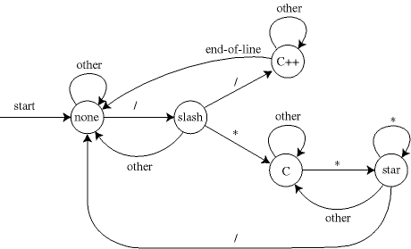
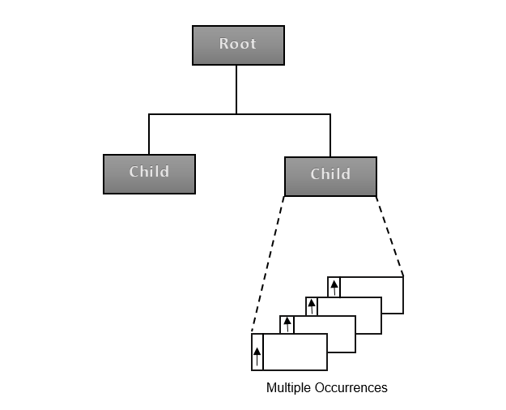
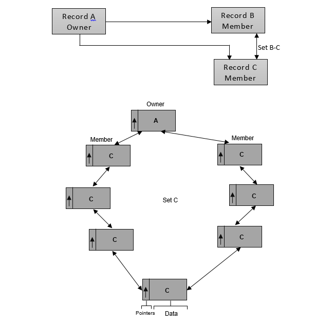
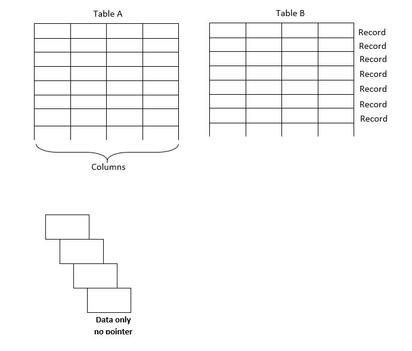

Database design focuses on how the database structure will be used to store and manage end-user data. Data modelling, the first step in designing a database refers to the process of creating a specific data model for a determined problem domain. (A problem domain is a clearly defined area within the real-world environment, with well-defined scope and boundaries that will be systematically addressed).
A data model is a relatively simple representation, usually graphical, of more complex real-world data structures. In general terms, a model is an abstraction of a more complex real-world object or event. A model's main function is to help you understand the complexities of the real-world environment. Within the database environment, a data model represents data structures and their characteristics, relations, constraints, transformation, and other constructs with the purpose of supporting a specific problem doamain.
The term data model is defined as technique for organizing and documenting a system's data sometimes called database model. The data model depicts what that data items are required, and how such data must look.
Database design is made much simpler when you use models. Models are simplified abstraction of real world events or condition. For example, such abstraction will enable us to explore the characteristics of entities and the relationship that can be created among such entities. If the models are not logically sound, the database derived from them will not deliver the database system's promise of effective information drawn from an efficient database. Good modelling yields good database design that is the basis for good application.

A data model, therefore acts as a bridge from real-world information to database storing relevant data content.
The search for better data management has led to several models that attempt to resolve the previous model's critical shortcomings and to provide solutions to ever-evolving data management needs. The following describes the available data models.
1. The Hierarchical Model
The hierarchical model was developed in the 1960s to manage large amounts of data for complex manufacturing projects. THe model's basic logical structure is represented by an upside-down tree. The hierarchical structure contains levels or segments. A segment is the equivalent of a file system's record type. Within the hierarchy, a higher layer is percieved as the parent of the segment directly beneath it, which is called the child. The hierarchical model depicts a set of one-to-many (1:M) relationships between a parent and its children segments. (Each parent can have many children, but each child has only one parent.)

2. Network Model
The Network model was created to represent complex data relationships more effectively than the hierarchical model, to improve database performance, and to impose a database standard. In the network model, the user percieves the network database as a collection of records in 1:M relationships. However, unlike the hierarchical model, the network model allows a record to have more than one parent. While the network database model is generally not used today, the definitions of standard database concepts that emerged with the network model are still used by modern data models.

3. The Relational Model
The relational database model allows the designer to focus on the logical representation of the data and its relationship rather than the physical storage details.
Relational design begins by defining the required entities. An entity is a person, place, event or thing for which we intend to collect data, for example, in a university environment entity of interest might be Students, Faculty members, Courses, Department, etc. entities are group according to their common characteristics. For instance students are grouped together to form an entity set. An entity set is a named collection of entities that share common characteristics. These characteristics are called Attributes.

Data records were connected using logic and by using that data that was redundantly stored in each table. Records on given subject occurrence could be selected from multiple tables by matching the contents of these redundantly stored data fields.
4. The Entity-Relationship Model
While the record data models served many purposes for the system designers, these ,odels had little meaning or relevance to the users community. Moreover, much of the information the users meeded to evaluate the effectiveness of the design was missing.
Several alternative data model formats were introduced to fill this void. These models attempted to model data in a different manner. Rather than look a data from a record perspectives, they began to look at the entitie or subjects about which data was beign collected and maintained. They also realized that the relationship between these data subjects was also an area that needed to be modelled and subjected to user scrutiny.
These relationships were important because in many respects they reflected the business rules under which the firm operated. This modelling of relationships was particularly important when relational data management systems were being used because the relationship between the data tables was not explicitly stated, and the design team required some method for describing those relationships to the user.
As we shall se later on, the Entity-Relationship model has other important advantage. In as much as it is non-DBMS specific, and is in fact not a DBMS model at all, data models can be developed by the design tean without first having to make a choice as to which DBMS to use. In those firms where multiple data management systems are both in use and available, this is a critical advantage in the design process.